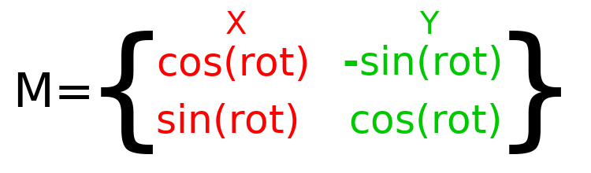
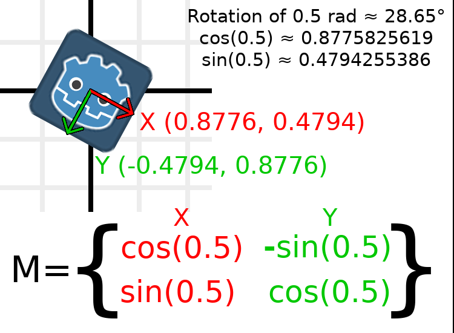
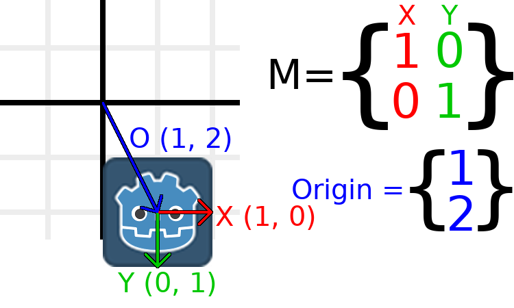
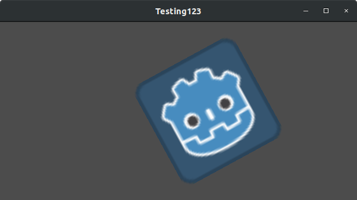
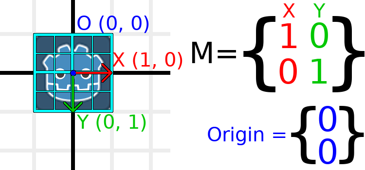
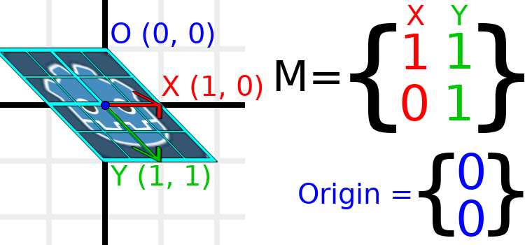
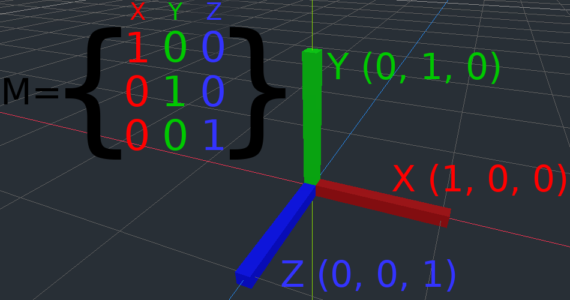

Ma trận và transform
Giới thiệu
Trước khi đọc bài hướng dẫn này, chúng tôi khuyên bạn đọc kỹ và hiểu bài hướng dẫn Toán vector, vì bài này yêu cầu kiến thức về vector.
Bài hướng dẫn này nói về các phép biến đổi (transformation) và cách chúng ta biểu diễn chúng trong Godot bằng ma trận. Đây không phải là một hướng dẫn đầy đủ, chuyên sâu về ma trận. Phần lớn thời gian, các phép biến đổi được áp dụng dưới dạng tịnh tiến, xoay và co giãn, vì vậy chúng ta sẽ tập trung vào cách biểu diễn những phép đó bằng ma trận.
Phần lớn hướng dẫn này tập trung vào 2D, sử dụng class_Transform2D và class_Vector2, nhưng cách mọi thứ hoạt động trong 3D cũng rất tương tự.
Ghi chú
Như đã đề cập trong bài hướng dẫn trước, điều quan trọng cần nhớ là trong Godot, trục Y hướng xuống trong 2D. Điều này ngược với cách hầu hết các trường dạy đại số tuyến tính, với trục Y hướng lên.
Ghi chú
Theo quy ước, trục X màu đỏ, trục Y màu xanh lá và trục Z màu xanh dương. Bài hướng dẫn này được tô màu theo đúng các quy ước đó, nhưng chúng ta cũng sẽ biểu diễn vector gốc tọa độ bằng màu xanh dương.
Các thành phần ma trận và ma trận đơn vị
Ma trận đơn vị biểu diễn một transform không có tịnh tiến, không xoay và không co giãn. Hãy bắt đầu bằng cách xem xét ma trận đơn vị và mối liên hệ giữa các thành phần của nó với cách nó hiển thị trực quan.

Ma trận có các hàng và cột, và ma trận biến đổi có những quy ước cụ thể về vai trò của mỗi hàng và cột.
Trong hình trên, ta có thể thấy vector X màu đỏ được biểu diễn bởi cột thứ nhất của ma trận, và tương tự vector Y màu xanh lá được biểu diễn bởi cột thứ hai. Thay đổi các cột sẽ làm thay đổi các vector này. Ta sẽ xem cách thao tác với chúng trong vài ví dụ tiếp theo.
Bạn không cần bận tâm đến việc thao tác trực tiếp với các hàng, vì chúng ta thường làm việc với các cột. Tuy nhiên, bạn có thể coi các hàng của ma trận là thể hiện những vector nào góp phần vào việc di chuyển theo một hướng nhất định.
Khi chúng ta nói đến một giá trị như t.x.y, đó là thành phần Y của vector cột X. Nói cách khác, là ô dưới-trái của ma trận. Tương tự, t.x.x là trên-trái, t.y.x là trên-phải và t.y.y là dưới-phải, với t là Transform2D.
Co giãn ma trận biến đổi
Áp dụng co giãn là một trong những phép toán dễ hiểu nhất. Hãy bắt đầu bằng cách đặt logo Godot bên dưới các vector để có thể thấy trực quan tác động lên một đối tượng:

Bây giờ, để co giãn ma trận, tất cả những gì ta cần làm là nhân mỗi thành phần với tỉ lệ mong muốn. Hãy phóng to nó lên 2 lần. 1 nhân 2 thành 2, và 0 nhân 2 thành 0, nên ta có kết quả như sau:

Để làm việc này trong code, ta nhân từng vector:
var t = Transform2D()
# Scale
t.x *= 2
t.y *= 2
transform = t # Change the node's transform to what we calculated.
Transform2D t = Transform2D.Identity;
// Scale
t.X *= 2;
t.Y *= 2;
Transform = t; // Change the node's transform to what we calculated.
Nếu muốn đưa nó về tỉ lệ ban đầu, ta có thể nhân mỗi thành phần với 0.5. Đó gần như là tất cả những gì cần biết về việc co giãn một ma trận biến đổi.
Để tính tỉ lệ của đối tượng từ một ma trận biến đổi có sẵn, bạn có thể dùng length() trên mỗi vector cột.
Ghi chú
Trong các dự án thực tế, bạn có thể dùng phương thức scaled() để thực hiện co giãn.
Xoay ma trận biến đổi
Ta sẽ bắt đầu giống như trước, với logo Godot bên dưới ma trận đơn vị:
Ví dụ, giả sử ta muốn xoay logo Godot 90 độ theo chiều kim đồng hồ. Hiện tại trục X hướng sang phải và trục Y hướng xuống. Nếu xoay chúng trong đầu, ta sẽ thấy một cách logic rằng trục X mới phải hướng xuống và trục Y mới phải hướng sang trái.
Bạn có thể tưởng tượng mình nắm lấy cả logo Godot lẫn các vector của nó, rồi xoay nó quanh tâm. Khi bạn xoay xong ở vị trí nào, hướng của các vector sẽ quyết định ma trận là gì.
Ta cần biểu diễn "xuống" và "trái" bằng tọa độ thông thường, nghĩa là ta sẽ đặt X thành (0, 1) và Y thành (-1, 0). Đây cũng là giá trị của Vector2.DOWN và Vector2.LEFT. Khi làm vậy, ta có được kết quả mong muốn là đối tượng được xoay:

Nếu bạn gặp khó khăn khi hiểu phần trên, hãy thử bài tập này: Cắt một hình vuông bằng giấy, vẽ các vector X và Y lên đó, đặt nó lên giấy kẻ ô, rồi xoay nó và ghi lại các điểm đầu mút.
Để thực hiện phép xoay trong code, ta cần tính được các giá trị bằng lập trình. Hình này cho thấy các công thức cần thiết để tính ma trận biến đổi từ một góc xoay. Đừng lo nếu phần này có vẻ phức tạp, tôi hứa đây là điều khó nhất bạn cần biết.

Ghi chú
Godot biểu diễn mọi phép xoay bằng radian, không phải độ. Một vòng đầy đủ là TAU hoặc PI*2 radian, và một phần tư vòng 90 độ là TAU/4 hoặc PI/2 radian. Làm việc với TAU thường giúp code dễ đọc hơn.
Ghi chú
Một sự thật thú vị: Ngoài việc trục Y hướng xuống trong Godot, phép xoay còn được biểu diễn theo chiều kim đồng hồ. Điều này có nghĩa là mọi hàm toán học và lượng giác đều hoạt động giống như một hệ có Y hướng lên và xoay ngược chiều kim đồng hồ, vì những khác biệt này "triệt tiêu lẫn nhau". Bạn có thể coi phép xoay trong cả hai hệ đều là "từ X sang Y".
Để thực hiện phép xoay 0.5 radian (khoảng 28.65 độ), ta thay giá trị 0.5 vào công thức trên và tính toán để tìm ra các giá trị thực tế:

Đây là cách làm việc đó trong code (gắn script vào một Node2D):
var rot = 0.5 # The rotation to apply.
var t = Transform2D()
t.x.x = cos(rot)
t.y.y = cos(rot)
t.x.y = sin(rot)
t.y.x = -sin(rot)
transform = t # Change the node's transform to what we calculated.
float rot = 0.5f; // The rotation to apply.
Transform2D t = Transform2D.Identity;
t.X.X = t.Y.Y = Mathf.Cos(rot);
t.X.Y = t.Y.X = Mathf.Sin(rot);
t.Y.X *= -1;
Transform = t; // Change the node's transform to what we calculated.
Để tính góc xoay của đối tượng từ một ma trận biến đổi có sẵn, bạn có thể dùng atan2(t.x.y, t.x.x), với t là Transform2D.
Ghi chú
Trong các dự án thực tế, bạn có thể dùng phương thức rotated() để thực hiện phép xoay.
Basis của ma trận biến đổi
Cho đến giờ ta chỉ làm việc với các vector x và y, chịu trách nhiệm biểu diễn phép xoay, co giãn và/hoặc trượt (nâng cao, được đề cập ở cuối bài). Hai vector X và Y được gọi chung là basis (cơ sở) của ma trận biến đổi. Các thuật ngữ "basis" và "basis vector" rất quan trọng cần biết.
Có thể bạn đã nhận thấy class_Transform2D thực ra có ba giá trị class_Vector2: x, y và origin. Giá trị origin không thuộc basis, nhưng nó là một phần của transform, và ta cần nó để biểu diễn vị trí. Từ giờ ta sẽ theo dõi vector origin trong tất cả các ví dụ. Bạn có thể coi origin là một cột nữa, nhưng thường tốt hơn là coi nó hoàn toàn tách biệt.
Lưu ý rằng trong 3D, Godot có một cấu trúc class_Basis riêng để chứa ba giá trị class_Vector3 của basis, vì code có thể trở nên phức tạp và việc tách nó ra khỏi class_Transform3D là hợp lý (Transform3D gồm một class_Basis và thêm một class_Vector3 cho origin).
Tịnh tiến ma trận biến đổi
Thay đổi vector origin được gọi là tịnh tiến (translate) ma trận biến đổi. Tịnh tiến về cơ bản là một thuật ngữ kỹ thuật cho việc "di chuyển" đối tượng, nhưng nó hoàn toàn không bao gồm phép xoay nào.
Hãy cùng làm một ví dụ để hiểu rõ hơn. Ta sẽ bắt đầu với transform đơn vị như lần trước, chỉ khác là lần này ta sẽ theo dõi cả vector origin.

Nếu muốn di chuyển đối tượng đến vị trí (1, 2), ta cần đặt vector origin của nó thành (1, 2):

Ngoài ra còn có phương thức translated_local(), thực hiện một phép toán khác với việc cộng hoặc thay đổi trực tiếp origin. Phương thức translated_local() sẽ tịnh tiến đối tượng tương đối với góc xoay của chính nó. Ví dụ, một đối tượng đã xoay 90 độ theo chiều kim đồng hồ sẽ di chuyển sang phải khi gọi translated_local() với Vector2.UP. Để tịnh tiến tương đối với hệ quy chiếu toàn cục/của node cha, hãy dùng translated().
Ghi chú
2D của Godot dùng tọa độ dựa trên pixel, nên trong các dự án thực tế bạn sẽ muốn tịnh tiến hàng trăm đơn vị.
Kết hợp tất cả lại
Ta sẽ áp dụng mọi thứ đã đề cập cho đến giờ lên một transform. Để làm theo, hãy tạo một dự án với một node Sprite2D và dùng logo Godot làm resource texture.
Hãy đặt phép tịnh tiến là (350, 150), xoay -0.5 rad và co giãn 3 lần. Tôi đã đăng một ảnh chụp màn hình cùng với code để tái tạo nó, nhưng tôi khuyến khích bạn thử tái tạo ảnh chụp màn hình mà không xem code!

var t = Transform2D()
# Translation
t.origin = Vector2(350, 150)
# Rotation
var rot = -0.5 # The rotation to apply.
t.x.x = cos(rot)
t.y.y = cos(rot)
t.x.y = sin(rot)
t.y.x = -sin(rot)
# Scale
t.x *= 3
t.y *= 3
transform = t # Change the node's transform to what we calculated.
Transform2D t = Transform2D.Identity;
// Translation
t.Origin = new Vector2(350, 150);
// Rotation
float rot = -0.5f; // The rotation to apply.
t.X.X = t.Y.Y = Mathf.Cos(rot);
t.X.Y = t.Y.X = Mathf.Sin(rot);
t.Y.X *= -1;
// Scale
t.X *= 3;
t.Y *= 3;
Transform = t; // Change the node's transform to what we calculated.
Trượt ma trận biến đổi (nâng cao)
Ghi chú
Nếu bạn chỉ muốn biết cách sử dụng ma trận biến đổi, cứ thoải mái bỏ qua phần này của bài hướng dẫn. Phần này khám phá một khía cạnh ít được dùng của ma trận biến đổi nhằm giúp bạn hiểu rõ hơn về chúng.
Node2D cung cấp sẵn một thuộc tính trượt (shearing).
Có thể bạn đã nhận thấy một transform có nhiều bậc tự do hơn so với tổ hợp các phép toán ở trên. Basis của một ma trận biến đổi 2D có tổng cộng bốn số trong hai giá trị class_Vector2, trong khi một giá trị góc xoay và một Vector2 cho tỉ lệ chỉ có 3 số. Khái niệm cấp cao cho bậc tự do còn thiếu này được gọi là trượt (shearing).
Thông thường, các basis vector luôn vuông góc với nhau. Tuy nhiên, phép trượt có thể hữu ích trong một số tình huống, và hiểu về phép trượt giúp bạn hiểu cách transform hoạt động.
Để cho bạn thấy trực quan nó trông thế nào, hãy phủ một lưới lên logo Godot:

Mỗi điểm trên lưới này có được bằng cách cộng các basis vector với nhau. Góc dưới-phải là X + Y, còn góc trên-phải là X - Y. Nếu ta thay đổi các basis vector, toàn bộ lưới sẽ di chuyển theo, vì lưới được tạo thành từ các basis vector. Mọi đường thẳng trên lưới hiện đang song song sẽ vẫn song song bất kể ta thay đổi các basis vector như thế nào.
Ví dụ, hãy đặt Y thành (1, 1):

var t = Transform2D()
# Shear by setting Y to (1, 1)
t.y = Vector2.ONE
transform = t # Change the node's transform to what we calculated.
Transform2D t = Transform2D.Identity;
// Shear by setting Y to (1, 1)
t.Y = Vector2.One;
Transform = t; // Change the node's transform to what we calculated.
Ghi chú
Bạn không thể đặt các giá trị thô của một Transform2D trong trình chỉnh sửa, vì vậy bạn bắt buộc phải dùng code nếu muốn trượt đối tượng.
Do các vector không còn vuông góc, đối tượng đã bị trượt. Điểm giữa-dưới của lưới, tức (0, 1) tương đối với chính nó, giờ nằm ở vị trí thế giới (1, 1).
Tọa độ bên trong đối tượng được gọi là tọa độ UV trong texture, nên hãy mượn thuật ngữ đó ở đây. Để tìm vị trí thế giới từ một vị trí tương đối, công thức là U * X + V * Y, trong đó U và V là các số còn X và Y là các basis vector.
Góc dưới-phải của lưới, luôn ở vị trí UV (1, 1), nằm ở vị trí thế giới (2, 1), được tính từ X*1 + Y*1, tức (1, 0) + (1, 1), hay (1 + 1, 0 + 1), hay (2, 1). Điều này khớp với quan sát của ta về vị trí góc dưới-phải của hình ảnh.
Tương tự, góc trên-phải của lưới, luôn ở vị trí UV (1, -1), nằm ở vị trí thế giới (0, -1), được tính từ X*1 + Y*-1, tức (1, 0) - (1, 1), hay (1 - 1, 0 - 1), hay (0, -1). Điều này khớp với quan sát của ta về vị trí góc trên-phải của hình ảnh.
Hy vọng giờ bạn đã hiểu rõ cách một ma trận biến đổi tác động lên đối tượng, cũng như mối liên hệ giữa các basis vector và cách vị trí thế giới của "UV" hay "tọa độ nội tại" của đối tượng bị thay đổi.
Ghi chú
Trong Godot, mọi phép toán transform đều được thực hiện tương đối với node cha. Khi chúng ta nói "vị trí thế giới", thì nếu node có cha, vị trí đó thực ra là tương đối với node cha.
Nếu muốn được giải thích thêm, bạn nên xem video tuyệt vời của 3Blue1Brown về phép biến đổi tuyến tính: https://www.youtube.com/watch?v=kYB8IZa5AuE
Ứng dụng thực tế của transform
Trong các dự án thực tế, bạn thường sẽ làm việc với transform lồng trong transform bằng cách có nhiều node class_Node2D hoặc class_Node3D là cha con của nhau.
Tuy nhiên, việc hiểu cách tính thủ công các giá trị cần thiết vẫn rất hữu ích. Chúng ta sẽ xem cách dùng class_Transform2D hoặc class_Transform3D để tính thủ công transform của các node.
Chuyển đổi vị trí giữa các transform
Có nhiều trường hợp bạn muốn chuyển đổi một vị trí vào và ra khỏi một transform. Ví dụ, khi bạn có một vị trí tương đối với người chơi và muốn tìm vị trí thế giới (tương đối với node cha), hoặc khi bạn có một vị trí thế giới và muốn biết nó ở đâu so với người chơi.
Ta có thể tìm xem một vector tương đối với người chơi sẽ được định nghĩa như thế nào trong không gian thế giới bằng toán tử *:
# World space vector 100 units below the player.
print(transform * Vector2(0, 100))
// World space vector 100 units below the player.
GD.Print(Transform * new Vector2(0, 100));
Và ta có thể dùng toán tử * theo thứ tự ngược lại để tìm xem một vị trí trong không gian thế giới sẽ là gì nếu nó được định nghĩa tương đối với người chơi:
# Where is (0, 100) relative to the player?
print(Vector2(0, 100) * transform)
// Where is (0, 100) relative to the player?
GD.Print(new Vector2(0, 100) * Transform);
Ghi chú
Nếu bạn biết trước transform được đặt ở (0, 0), bạn có thể dùng các phương thức "basis_xform" hoặc "basis_xform_inv" thay thế, chúng bỏ qua việc xử lý phép tịnh tiến.
Di chuyển đối tượng tương đối với chính nó
Một thao tác phổ biến, đặc biệt trong game 3D, là di chuyển một đối tượng tương đối với chính nó. Ví dụ, trong game bắn súng góc nhìn thứ nhất, bạn sẽ muốn nhân vật di chuyển về phía trước (trục -Z) khi nhấn W.
Vì các basis vector là hướng tương đối với node cha, và vector origin là vị trí tương đối với node cha, ta có thể cộng thêm bội số của các basis vector để di chuyển một đối tượng tương đối với chính nó.
Đoạn code này di chuyển một đối tượng 100 đơn vị sang bên phải của chính nó:
transform.origin += transform.x * 100
Transform2D t = Transform;
t.Origin += t.X * 100;
Transform = t;
Để di chuyển trong 3D, bạn cần thay "x" bằng "basis.x".
Ghi chú
Trong các dự án thực tế, bạn có thể dùng translate_object_local trong 3D hoặc move_local_x và move_local_y trong 2D để làm việc này.
Áp dụng transform lên transform
Một trong những điều quan trọng nhất cần biết về transform là cách bạn có thể dùng nhiều transform cùng nhau. Transform của node cha ảnh hưởng đến tất cả các node con của nó. Hãy cùng phân tích một ví dụ.
Trong hình này, node con có thêm số "2" sau tên các thành phần để phân biệt với node cha. Có thể trông hơi rối mắt với quá nhiều con số, nhưng hãy nhớ rằng mỗi số được hiển thị hai lần (cạnh các mũi tên và cả trong ma trận), và gần một nửa số đó là số không.

Các phép biến đổi duy nhất ở đây là node cha được đặt tỉ lệ (2, 1), node con được đặt tỉ lệ (0.5, 0.5), và cả hai node đều được đặt vị trí.
Tất cả các phép biến đổi của node con đều chịu ảnh hưởng bởi các phép biến đổi của node cha. Node con có tỉ lệ (0.5, 0.5), nên bạn sẽ nghĩ nó là một hình vuông tỉ lệ 1:1, và đúng là vậy, nhưng chỉ khi xét tương đối với node cha. Vector X của node con trở thành (1, 0) trong không gian thế giới, vì nó bị co giãn bởi các basis vector của node cha. Tương tự, vector origin của node con được đặt thành (1, 1), nhưng thực tế điều này di chuyển nó (2, 1) trong không gian thế giới, do các basis vector của node cha.
Để tính thủ công transform trong không gian thế giới của một transform con, đây là code ta sẽ dùng:
# Set up transforms like in the image, except make positions be 100 times bigger.
var parent = Transform2D(Vector2(2, 0), Vector2(0, 1), Vector2(100, 200))
var child = Transform2D(Vector2(0.5, 0), Vector2(0, 0.5), Vector2(100, 100))
# Calculate the child's world space transform
# origin = (2, 0) * 100 + (0, 1) * 100 + (100, 200)
var origin = parent.x * child.origin.x + parent.y * child.origin.y + parent.origin
# basis_x = (2, 0) * 0.5 + (0, 1) * 0
var basis_x = parent.x * child.x.x + parent.y * child.x.y
# basis_y = (2, 0) * 0 + (0, 1) * 0.5
var basis_y = parent.x * child.y.x + parent.y * child.y.y
# Change the node's transform to what we calculated.
transform = Transform2D(basis_x, basis_y, origin)
// Set up transforms like in the image, except make positions be 100 times bigger.
Transform2D parent = new Transform2D(2, 0, 0, 1, 100, 200);
Transform2D child = new Transform2D(0.5f, 0, 0, 0.5f, 100, 100);
// Calculate the child's world space transform
// origin = (2, 0) * 100 + (0, 1) * 100 + (100, 200)
Vector2 origin = parent.X * child.Origin.X + parent.Y * child.Origin.Y + parent.Origin;
// basisX = (2, 0) * 0.5 + (0, 1) * 0 = (0.5, 0)
Vector2 basisX = parent.X * child.X.X + parent.Y * child.X.Y;
// basisY = (2, 0) * 0 + (0, 1) * 0.5 = (0.5, 0)
Vector2 basisY = parent.X * child.Y.X + parent.Y * child.Y.Y;
// Change the node's transform to what we calculated.
Transform = new Transform2D(basisX, basisY, origin);
Trong các dự án thực tế, ta có thể tìm transform thế giới của node con bằng cách áp dụng một transform lên transform khác bằng toán tử *:
# Set up transforms like in the image, except make positions be 100 times bigger.
var parent = Transform2D(Vector2(2, 0), Vector2(0, 1), Vector2(100, 200))
var child = Transform2D(Vector2(0.5, 0), Vector2(0, 0.5), Vector2(100, 100))
# Change the node's transform to what would be the child's world transform.
transform = parent * child
// Set up transforms like in the image, except make positions be 100 times bigger.
Transform2D parent = new Transform2D(2, 0, 0, 1, 100, 200);
Transform2D child = new Transform2D(0.5f, 0, 0, 0.5f, 100, 100);
// Change the node's transform to what would be the child's world transform.
Transform = parent * child;
Ghi chú
Khi nhân ma trận, thứ tự rất quan trọng! Đừng nhầm lẫn chúng.
Cuối cùng, áp dụng transform đơn vị sẽ luôn không làm gì cả.
Nếu muốn được giải thích thêm, bạn nên xem video tuyệt vời của 3Blue1Brown về phép hợp ma trận: https://www.youtube.com/watch?v=XkY2DOUCWMU
Nghịch đảo ma trận biến đổi
Hàm affine_inverse trả về một transform "hoàn tác" transform trước đó. Điều này có thể hữu ích trong một số tình huống. Hãy cùng xem vài ví dụ.
Nhân một transform nghịch đảo với transform thông thường sẽ hoàn tác mọi phép biến đổi:
var ti = transform.affine_inverse()
var t = ti * transform
# The transform is the identity transform.
Transform2D ti = Transform.AffineInverse();
Transform2D t = ti * Transform;
// The transform is the identity transform.
Biến đổi một vị trí bằng một transform rồi bằng nghịch đảo của nó sẽ cho ra đúng vị trí ban đầu:
var ti = transform.affine_inverse()
position = transform * position
position = ti * position
# The position is the same as before.
Transform2D ti = Transform.AffineInverse();
Position = Transform * Position;
Position = ti * Position;
// The position is the same as before.
Tất cả hoạt động thế nào trong 3D?
Một trong những điều tuyệt vời về ma trận biến đổi là chúng hoạt động rất giống nhau giữa phép biến đổi 2D và 3D. Mọi code và công thức dùng cho 2D ở trên đều hoạt động tương tự trong 3D, với 3 ngoại lệ: có thêm trục thứ ba, mỗi trục có kiểu class_Vector3, và Godot lưu class_Basis tách biệt với class_Transform3D, vì phần toán có thể trở nên phức tạp và việc tách riêng là hợp lý.
Mọi khái niệm về cách tịnh tiến, xoay, co giãn và trượt hoạt động trong 3D đều giống hệt so với 2D. Để co giãn, ta lấy từng thành phần và nhân nó; để xoay, ta thay đổi hướng của từng basis vector; để tịnh tiến, ta thao tác với origin; và để trượt, ta thay đổi các basis vector để chúng không vuông góc.

Nếu muốn, bạn nên thử nghiệm với transform để hiểu cách chúng hoạt động. Godot cho phép bạn chỉnh sửa ma trận transform 3D trực tiếp từ Inspector. Bạn có thể tải dự án này, có các đường kẻ và khối lập phương màu giúp trực quan hóa các vector class_Basis và origin trong cả 2D lẫn 3D: https://github.com/godotengine/godot-demo-projects/tree/master/misc/matrix_transform
Ghi chú
Bạn không thể chỉnh sửa trực tiếp ma trận transform của Node2D trong Inspector của Godot 4.0. Điều này có thể thay đổi trong một phiên bản Godot tương lai.
Nếu muốn được giải thích thêm, bạn nên xem video tuyệt vời của 3Blue1Brown về phép biến đổi tuyến tính 3D: https://www.youtube.com/watch?v=rHLEWRxRGiM
Biểu diễn phép xoay trong 3D (nâng cao)
Khác biệt lớn nhất giữa ma trận biến đổi 2D và 3D là cách bạn biểu diễn riêng phép xoay mà không cần các basis vector.
Với 2D, ta có một cách dễ dàng (atan2) để chuyển đổi giữa ma trận biến đổi và một góc. Trong 3D, phép xoay quá phức tạp để biểu diễn bằng một con số. Có một thứ gọi là góc Euler, có thể biểu diễn phép xoay dưới dạng một bộ 3 số, tuy nhiên chúng bị hạn chế và không mấy hữu ích, trừ những trường hợp đơn giản.
Trong 3D, ta thường không dùng góc mà dùng một basis biến đổi (được dùng gần như ở mọi nơi trong Godot), hoặc dùng quaternion. Godot có thể biểu diễn quaternion bằng struct class_Quaternion. Lời khuyên của tôi là hoàn toàn bỏ qua cách chúng hoạt động bên trong, vì chúng rất phức tạp và không trực quan.
Tuy nhiên, nếu bạn thực sự cần biết cách nó hoạt động, đây là một số tài liệu tuyệt vời mà bạn có thể đọc theo thứ tự:
https://www.youtube.com/watch?v=mvmuCPvRoWQ